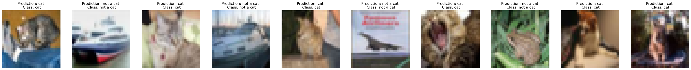
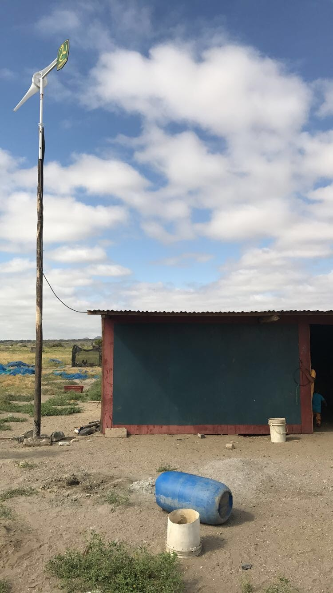
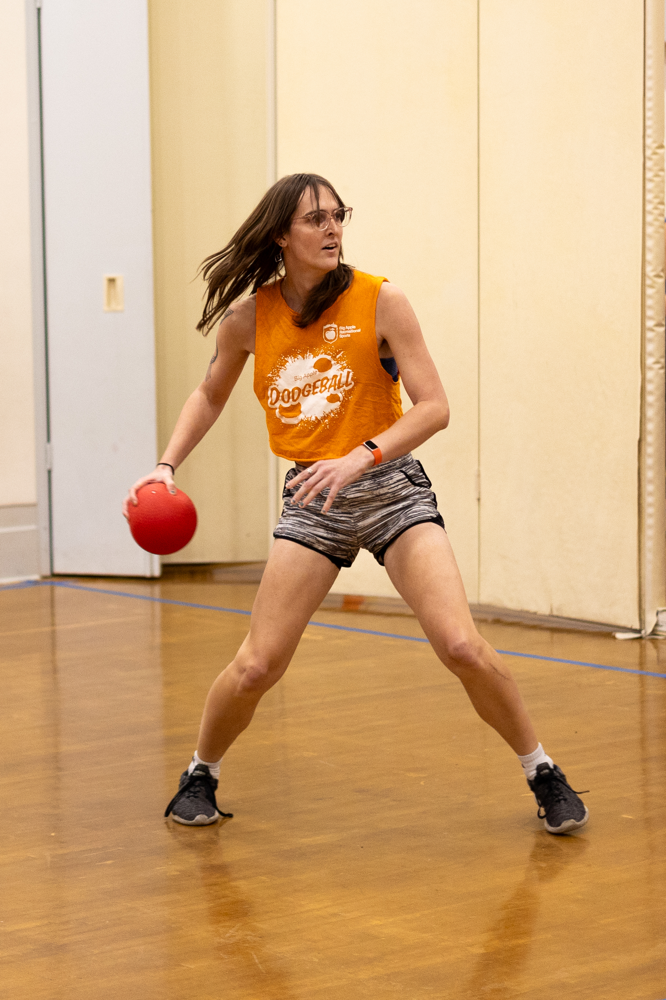
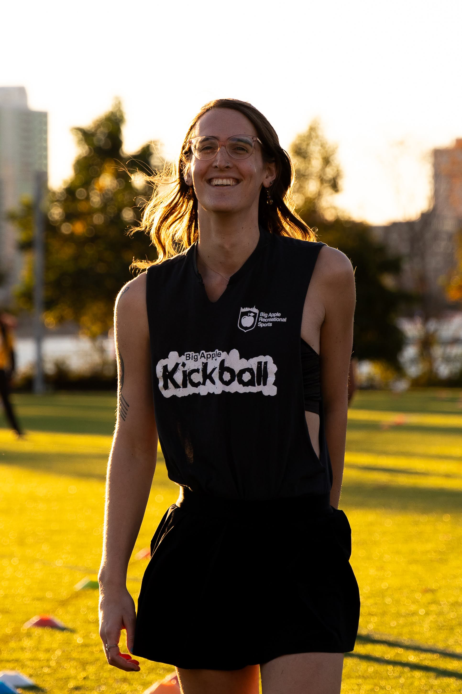
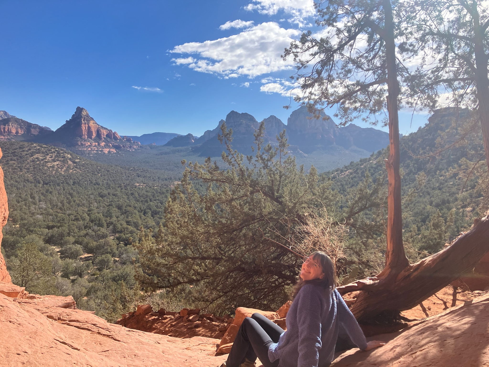
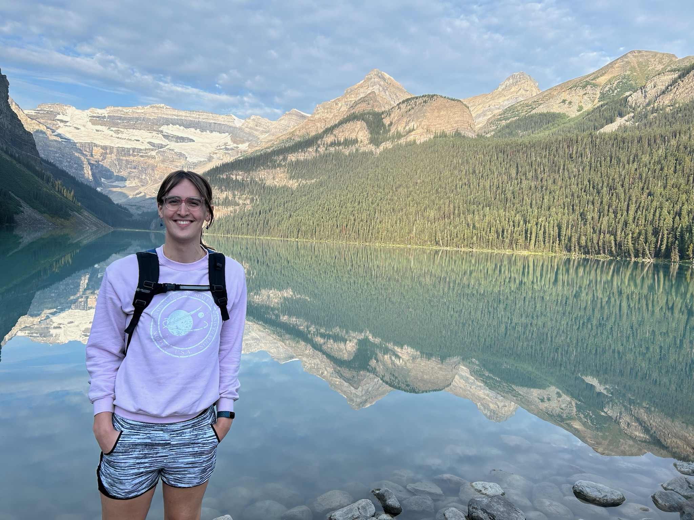

I’m a mathematician and machine learning researcher, recently completing a Ph.D. in Mathematics at Rutgers University–Newark (graduating October 2025). My dissertation, advised by Dr. Chen Wan, proves a case of the Gan–Gross–Prasad conjecture for general spin groups. This work is part of the Langlands Program: a deep intersection of number theory, representation theory, and harmonic analysis.
Working in this interdisciplinary field has taught me to value a broad technical foundation, one that enables me to connect ideas across domains and approach complex problems with both theoretical rigor and creative flexibility.
Alongside my academic research, I completed a machine learning engineering internship at Covar, where I led a proof-of-concept pipeline combining Meta’s Segment Anything (SAM) with Gaussian Splatting for 3D scene segmentation. This involved processing large scale video data, reconstructing camera poses using structure from motion, adapting models across domains, and synthesizing insights from cutting edge ML research. I presented the project internally and to an external client, translating technical results into actionable insights.
I'm currently seeking roles in machine learning research and applied ML, with interests in computer vision, foundational models, and graph based learning. I bring strengths in mathematical modeling, research driven development, and clear technical communication, skills I’m excited to apply to impactful, real world systems.
Previously, I earned a B.S. in Mathematics and Computer Science with distinction from Duke University, where I completed an honors thesis on symmetric square L-functions under Dr. Aaron Pollack.
I am interested in the local side of the Langlands program, particularly how the structure of algebraic groups influences the analytic behavior of their representations. My current research centers on the local Gan-Gross-Prasad conjecture for tempered representations of general spin groups. Building on prior results for special orthogonal and unitary groups, my dissertation establishes a multiplicity-one theorem for Gan-Gross-Prasad triples in both the p-adic and Archimedean settings and extends the local Langlands correspondence to pure inner forms, classified by a Galois cohomology set. A key ingredient is the derivation of a local trace formula that links spectral and geometric expansions to a certain multiplicity formula.
Previously, I focused more on the analytic side of things and studied modular forms. In my undergraduate thesis I studied Siegel Eisenstein Series. Ichino has shown that certain values of some symmetric square L-functions can be expressed as the inner product of a Saito-Kurokawa lift. It is also known that there is a pullback formula which expresses Saito-Kurokawa lifts in terms of genus one cusp forms. We can then take advantage of the finite dimensionality of the vector space of cusp forms to calculate our desired value with simple linear algebra. This was done in
Sage Math
.
Instagram Network Analysis
Samantha Pease
This project explores the structure of an individual's Instagram social graph by identifying and analyzing mutual connections among followed users. I primarily looked at the data for my own Instagram network but also examined my sister's and roommate's networks for a comparison point. Future work would include comparing more diverse networks. The pipeline integrates web scraping and network science to uncover community structures, central users, and hidden patterns in online social behavior, as well as graph neural networks to predict potential future connections. The main goals were to make interesting visualizations of social networks, analyze local and global network statistics, and explore how a network can used as a basis for a graph neural network to predict communities as well as future connections.
Cat Identification with Neural Network From Scratch
Sam Pease
I built a deep neural network from the ground up to explore how architecture, activation functions, learning rates, and other parameters affect performance. Starting with a small cat image dataset and later pivoting to a binary classification task using CIFAR-10 (Cat vs. Not Cat), I encountered firsthand the limitations of deep neural networks for image classification without convolutional layers. Despite experimenting with network depth and size, I found minimal accuracy gains—highlighting the importance of architecture over brute-force tuning. All training was done on CPU, further emphasizing hardware constraints in model development.

Topology as a Tool to Differentiate Canopy Architecture in North American Forests
Eva Arroyo,
Sam Pease,
Nikita Zemlevskiy
In this project, we used topological data analysis (TDA) to classify forest types based on LiDAR-derived canopy height models from four ecologically distinct U.S. forests. We extracted persistence diagrams—summaries of geometric features at multiple scales—using both 1D and 2D sublevel set filtrations, then transformed these into feature vectors for classification using support vector machines (SVM). Our results showed that 1D persistence, which captures broader structural trends in canopy architecture, outperformed 0D persistence in distinguishing between forest types. This work demonstrates how persistent homology can uncover meaningful ecological differences in complex spatial datasets.
Remote Wind Turbine Monitoring System
Sam Pease,
Martin Cala
In the summer of 2017, I volunteered with WindAid, an international NGO based in Trujillo, Peru. I began by working in the engineering workshop, helping to construct a wind turbine (pictured below) for a rural home with no access to electricity. Later, another volunteer and I initiated R&D on a prototype monitoring system designed to remotely report windspeed, power generation, and battery capacity for installed turbines. The goal was to provide engineers with diagnostic feedback, as turbines were often located in remote areas and maintained by users with limited technical knowledge. We successfully developed a functional prototype and handed it off to WindAid’s permanent engineering team for continued development.

Academic Year 2024-2025:
TA for large lecture of PreCalculus MATH 114
Academic Year 2023-2024:
TA for large lecture of College Algebra MATH 109
Summer 2023:
Applied Calculus MATH 119
Spring 2023:
TA for large lecture of College Algebra MATH 109
Fall 2022:
TA for large lecture of Applied Calculus MATH 119
Spring 2022:
Calculus 1 MATH 135
Fall 2021:
TA for large lecture of PreCalculus MATH 114
Summer 2021:
Applied Calculus MATH 119
Fall 2020 and Spring 2021:
Tutor in the Rutger's Tutoring Center
Fall 2017 through Spring 2020:
Tutor in the Math Help room for Linear algebra (applied and proof based) and Multivariable Calculus
In my free time I am very active in various sports leagues and my local queer community. I currently play dodgeball and kickball.


I also love the outdoors and try to get out as often as I can! My most recent trips have been to Sedona Arizona and Banff in Canada

